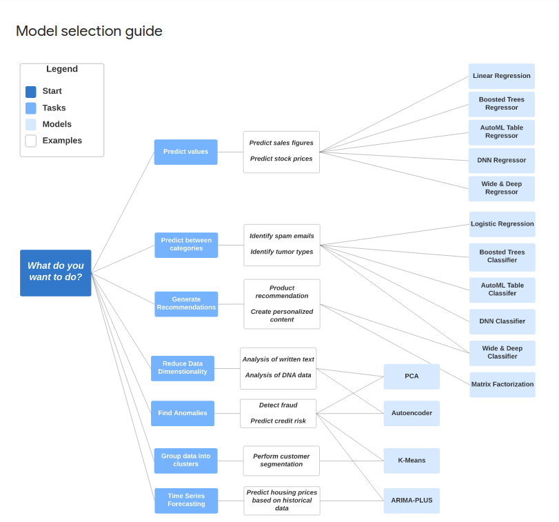
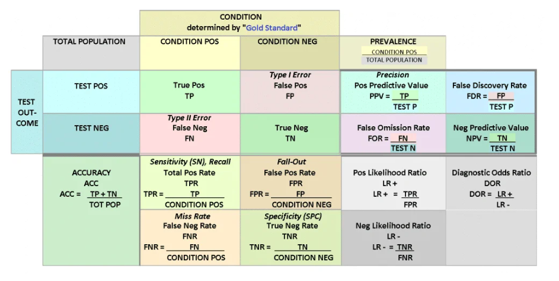

Professional Machine Learning Engineer
Google path professional Machine Learning Engineer
Professional Machine Learning Engineer
How Google Does Machine Learning
What It Means to be AI-First
How Google Does ML
Machine Learning Development with Vertex AI
Machine Learning Development with Vertex Notebooks
Best Practices for Implementing Machine Learning on Vertex AI
Responsible AI Development
1. Introduction to AI and Machine Learning
This course provide a toolbox which is full of AI tecnologies and tools offered by Google
- Foundation : cloud essentials
- Developement : different options to build ML and Workflow
- Solutions :Vertical and horizontal solutions and generative AI
AI Foundations
Why AI and Why Google ?
Google is a leader in developement of AI and it offers a wide range of tools
and provides :
- State-of-the-art ML models
- End-to-end model development and MLOps - Productivity
- Unified data to AI plataform
- Efficient and scalable AI - Infrastructure
7 principals AI should be:
- socially beneficial
- Avoid creating or reinforcing unfair bias
- Build and tested for safety
- Accountable to people
- Incorporate privancy design principles
- Uphold high standards of scientific excelence
- Made available for uses that accord with these principles
Google Cloud Infrastructure
- Computer Engine : IaaS with compute , storage, network similar to a phisical machine
- Google Kubernetes Engine : Containerized applications
- App Engine : PaaS, binds code to libraries and developed can be focused on appl logic
- Cloud Functions : Executes code in response to events. Functions as a services
- Cloud Run : Fully managed platform, auto scales up and down, charge only by resources you use
CPU, GPU and TPU
- CPU : Central processing unit
- GPU : Graphics processing unit
- TPU : Tensor Processing Unit
TPU are faster and more energy-efficient for AI and ML applications.
This is the state-of-the-art hardware and supercomputing technology is available with Google Cloud products and services
STORAGE
How to choose from these products and services ?
It depends of data type and bussiness needs
Unstructured data
- Cloud Storage
- Standard storage - Hot data
- Nearline storage - Once per month
- Coldline storage - Once every 90 days
- Archive storage - Once a year
Structure data
- Transactional
- SQL
- local/reginal : Cloud SQL
- global : Cloud spanner
- NoSQL : Firestore
- SQL
- Analytical
- SQL : BigQuery
- NOSQL : Cloud Bigtable
Data and AI Tools
Products available in each stage of the data-to-AI workflow
- Ingestion and processing : (Pub/Sub, Dataflow, Dataproc and Cloud Data Fusion)
- Storage : (CloudSQL, Cloud Spanner, Cloud BigTable and Firestore)
- Analytics : (BigQuery and looker)
- AI/ML : (VertexAI)
ML model categories
- AI includes anything related to computer mimicking human intelligence (Robts and self-driving cars)
- Machine Learning is a subset of AI that allows computers to learn without being explicity programmed
BigQuery ML
With BigQuery ML, you can manage the tabular data and execute ML models in one place with just a few steps
Key phases of Machine Learning project
- Extract, transform, and load data into BigQuery
- Select and preprocess featres
- BigQuery ML does some preprocessing for us, like one-hot encoding
- Create the model
#standarSQL
CREATE MODEL
ecommerce.classification
OPTIONS
(
model_type='logistic_reg'
input_label_cols='will_buy_later'
) AS
# SQL with training data
There are others algorithms :

- Evaluate the performance of the trained model
SELECT
roc_auc,
accuracy,
precision,
recall
FROM
ML.EVALUATE(MODEL`ecommerce.classification`)- Use the model to make predictions
SELECT * FROM
ML.PREDICT
(
MODEL.`ecommerce.classification` )AI Development Options
Google offers to build a machine learning models
- Pre-trained APIs : Use ML models that google already built and trained
- BigQuery ML : Use SQL queries to create and execute ML models in BigQuery
- AutoML : Apply no-code solution to build ml models on Vertex AI
- Custom training : Code your own ML env to have the control over the ML pipeline
Pre-Trained APIs
API (Application Programming Interface) define how software components communicate with each other.
- Cloud Natural Language API : recognizes parts of speech called entities and sentiment.
- Cloud Speech-to-Text : convert audio to text
- Cloud Translation API : convert text from one language to another
- Cloud Vision : recognizes content in static images
- Cloud Video Intelligence : recognizes motion and actions in a video
- Diagflow API : builds conversational interfaces
- Generative AI related APIs :
- PaLM for text : perform language tasks and tune the LLM model with your own data.
- PaLM for chat : create applications that engage users in dynamic and context-aware conversations.
- Image for image : create and edit images
- Embeddings API for text and Image : extract semantic information from unstructured data.
- Chirp for speech : build voice
- Cody for code generation : produce and debug code
- Natural Language API
Vertex AI
Vertex AI provides an end-to-end ML, pipeline to prepare data, and create, deploy, and manage models over time, and at scale.
We can think of Vertex AI Workbench as a Jupyter notebook deployed in a single development environment
Auto ML
Automate the process to develop and deploy an ML model.
AutoML automates the pipeline from feature ngineering, to architecture search, to hyperparameter tuning, and to model ensembly
Custom Training
Do-it-yourself solution to build an ML project.
Which environment you want your ML training code to use.
- pre-built container
- custom container
Can use ML Library (TensorFlow, scikit-learn, and PyTorch.) collection of pre-written code that can be used to perform machine learning tasks.
TensorFlow
Lab Natural Language API
AI Development Workflow
How a machine learns
There are several types of Neural Networks that solves different problems
- ANN artificial neural network
- DNN deep neural network
- CNN convolutional neural network
- RNN recurrent neural network
- LLM large language models
STEP 1 : calculate the weighted sum multiplying each input value by its corresponding weight, and then summing the products
STEP 2: apply an activation function to the weighted sum.
STEP 3 : the weighted sum is calculated for the output layer
STEP 4 : apply an activation function to the weighted sum
STEP 5 : calculate the cost function to minimize the difference.
Cost functions for : * regression (MSE) * classfication (Cross-entropy)
STEP 6: backpropagation
if the difference between the predicted and actual results is significant, you must go back to adjust weights and biases to minimize the cost function.
STEP 7: Interate the process (epoch)
- we can set the number of epochs as a hyperparameter in training
- we can tell that the cost function has reached its optimum when the value stops decreasing, even after many iterations.
This is how a neural network learns : It iterates the learning by continuously adjusting weights to improve behavior until it reaches the best result.
What is an activation function ?
activation function is used to prevent linearity or add non-linearity.
- ReLU
- Sigmoid : binary classfication
- Softmax : multi-class classification
- TanH
- etc …
ML workflow
Stages :
- Data preparation (Upload data and Feature engineer)
- Model development
- Model serving
Data preparation
During this stage, you must upload data and then prepare it for model training with feature engineering.
- feature engineering: the data must be processed before the model starts training.
- Vertex AI provides a function called Vertex AI Feature Store, which is a centralized repository to organize, store, and serve features.
Model development
After data is ready it is time to training the model, this stage involves two iterative steps :
- Model training
- Model evaluation
Vertex AI provides extensive evaluation metrics to help determine a model’s performance. A confusion matrix is a specific performance measurement for machine learning classification problems.
Recall : refers to all the positive cases, and looks at how many were predicted correctly. Precision : refers to all the cases predicted as positive, and how many are actually positive.

Model serving
On this stage we have two steps :
- Deploy model
- Monitor the model
There are 3 options to deploy a model
- Endpoint
- Batch prediction
- Offline prediction
To monitor there are a toolkit Vertex AI Pipelines
MLOps and workflow automation
MLOps means automating and monitoring each step of the ML system construction to enable continuous integration, training, and delivery.
- MLOps on Vertex AI is a tool kit called Vertex AI Pipelines that supports :
- Kubeflow Pipelines, or KFP, and
- TensorFlow Extended, or TFX.
Generative AI
Generative AI aims to solve general problems trained with amount of multimodal data.
Behind it we have LLMs (Large Language Models) , the revolution starts in 2017 when Transformers was invented by Google Researchers.
What are Large Language Models ?
Refer to large, general-purpose language models can be pre-trained and then fine-tuned for specific purpose
- Large :
- Large training dataset PetaBytes
- Large number of parameters trillions
- LLM are trained to solve :
- Text classification
- Question answering
- Document summarization
- Text generation
Use Cases
- Create :
- Generate description from images
- Improve images
- Summarize:
- Videos, audio and paragraphs
- Geneate Q&A
- Discover
- Search for a document
- Discover coding bugs
- Automate
- Extract and label contracts
- classify feedback and create ticket
Duet AI
Code assistance provides AI-driven code assistance for cloud users such as application developers and data engineers.
Model Garden
Model Garden is a single place to discover and interact with many of Google’s pre-trained and open-source models
Categories of models
- Foundation models
- PaLM for text
- PaLM for chat
- Imagen for image
- Embeddings API for text and image
- Chirp for speech
- Codey for code generation
- Task-specific solutions
- Entity analysis
- Sentiment analysis
- Syntax analysis
- Content classification
- Object detector
- Text translation
- Fine-tunable or open-source models
Generative AI Studio
We can use Generative AI Studio to quickly prototype and customize generative AI models with no or low code.
That support Language, Vision and Speech